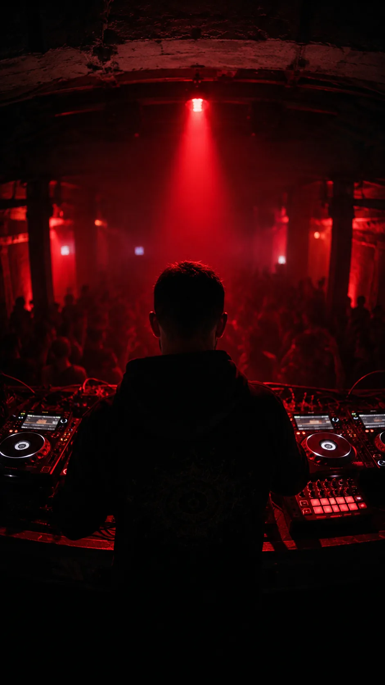
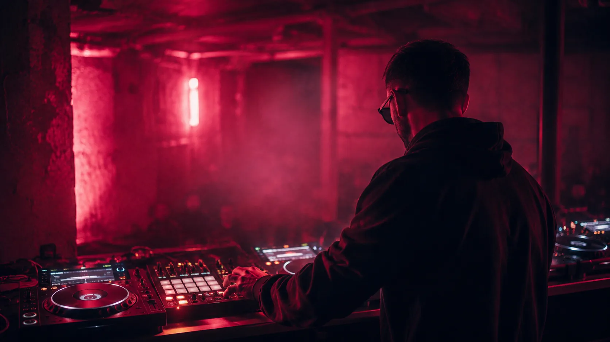

SEDDLER is the hybrid-live techno project of Denys — DJ, producer and head of Vertigo Records (Berlin, est. 2004). Hypnotic, driving techno and tek-trance performed live from hardware — made for techno floors, alternative stages and sunrise.


Hybrid DJ set — performs from a DJ controller + Maschine groovebox via a hi-end DAC and analog signal path. Standard club booth (2× CDJs + mixer) or controller setup. Full technical & hospitality rider on request.
Booking via Vertigo Records. Fee on request — based on date, region and travel. Available across the EU.